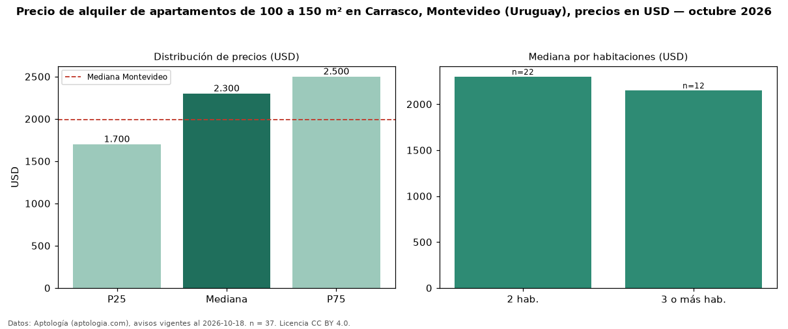

Precio de alquiler de apartamentos de 100 a 150 m² en Carrasco, Montevideo (Uruguay), precios en USD — octubre 2026
Con 37 avisos vigentes, el canon mediano de apartamentos de 100 a 150 m² en alquiler en Carrasco, Montevideo (Uruguay) es USD 2.300 al mes. Eso es 8 % menos que la mediana de todos los apartamentos en alquiler de Carrasco (USD 2.500, n = 116); este segmento reúne el 32 % de esos avisos. Por metro cuadrado, la mediana es USD 18,81/m² al mes (n = 37), 4 % por encima del conjunto de referencia (USD 18,15/m²). El área mediana anunciada es 120 m². El segmento con más oferta es el de 2 habitaciones (22 avisos, mediana USD 2.300); pasar de 2 habitaciones a 3 o más habitaciones cambia la mediana −7 %. La mediana de todos los apartamentos en alquiler de Montevideo es USD 1.990 (+16 % de diferencia). La mitad central de los avisos va de USD 1.700 a USD 2.500 (razón 1,5), una dispersión moderada. Datos: Aptología (aptologia.com), CC BY 4.0 — https://www.aptologia.com/uy/alquiler/montevideo/carrasco. Archivos: PDF, CSV con las cifras y gráfica PNG.

| Avisos únicos | 37 |
|---|---|
| Percentil 25 | COP 1.700 |
| Mediana | COP 2.300 |
| Percentil 75 | COP 2.500 |
| Mediana por m² | COP 18 |
Fuente: avisos vigentes de portales inmobiliarios recopilados por Aptología, deduplicados (mínimo 30 avisos únicos por celda). Precios pedidos, no cerrados. Fecha: 2026-10-18.